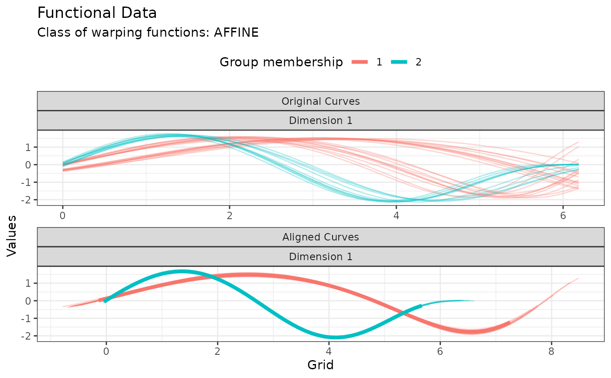

Plot for kmap objects
# S3 method for kma
plot(x, type = "data", number_of_displayed_points = 50, ...)Arguments
- x
The kma object to be plotted.
- type
A string specifying the type of information to display. Choices are
"data"for plotting the original and aligned curves (default) or"warping"for plotting the corresponding warping functions.- number_of_displayed_points
The number of points to used for display. It is set as the minimum between this parameter and the number of points in the original data set. Defaults to 50.
- ...
Other graphical parameters (see par). Ignored for now.
Value
A ggplot object invisibly.
Examples
res <- kma(
simulated30$x,
simulated30$y,
seeds = c(1, 21),
n_clust = 2,
center_method = "medoid",
warping_method = "affine",
dissimilarity_method = "pearson"
)
#> Information about the data set:
#> - Number of observations: 30
#> - Number of dimensions: 1
#> - Number of points: 200
#>
#> Information about cluster initialization:
#> - Number of clusters: 2
#> - Initial seeds for cluster centers: 1 21
#>
#> Information about the methods used within the algorithm:
#> - Warping method: affine
#> - Center method: medoid
#> - Dissimilarity method: pearson
#> - Optimization method: bobyqa
#>
#> Information about warping parameter bounds:
#> - Warping options: 0.1500 0.1500
#>
#> Information about convergence criteria:
#> - Maximum number of iterations: 100
#> - Distance relative tolerance: 0.001
#>
#> Information about parallelization setup:
#> - Number of threads: 1
#> - Parallel method: 0
#>
#> Other information:
#> - Use fence to robustify: 0
#> - Check total dissimilarity: 1
#> - Compute overall center: 0
#>
#> Running k-centroid algorithm:
#> - Iteration #1
#> * Size of cluster #0: 20
#> * Size of cluster #1: 10
#> - Iteration #2
#> * Size of cluster #0: 20
#> * Size of cluster #1: 10
#>
#> Active stopping criteria:
#> - Memberships did not change.
plot(res, type = "data")

plot(res, type = "warping")